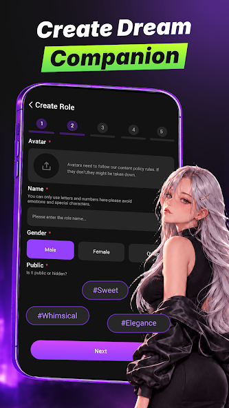

Rosie 两年迭代观察：一个陪伴型 AI 如何在合规与沉浸之间找平衡
从角色创建的内容闸门到 Gems 按条计费，Rosie 的每一步更新都在回答同一个问题——陪伴型 AI 该走多远、收多少钱、对谁开放。
现在打开 Rosie，第一个跳到眼前的不是聊天界面，而是一行警示：头像必须遵守内容政策，违规会被下架。紧接着注册流程要求你自报年龄、勾上"已满 13 岁"的选项。这些体验在通用 AI 助手那里几乎不存在——你用 ChatGPT 从来不会被问年龄，也没人管你头像传什么。但对 Rosie 来说，这些不是多余的步骤，而是它从第一版走到今天的全部浓缩。
现状：它现在是什么样
Rosie官网 的产品形态可以一句话说清：你花点数（Gems）买消息条，和一个有名字、有照片、有性格的 AI 角色聊天。角色可以是平台公共池里挑的，也可以自己从零捏——名字、头像、个性标签、开场白，全都能配。每个角色自带一套结构化人设，应用层还会做偏好学习，让它"记得"你之前聊过什么。
和通用助手最大的不同是它的设计目标。通用助手追求"高效解决问题"——答完收工，会话归零。Rosie 追求"维持关系体验"——角色有人设、有情绪、会主动找你，对话可以漫无目的。这个差异决定了它的一切：计费逻辑是按消息条数（5 Gems 一条），不是订阅；审核重点在内容合规，不是输出准确性；用户口碑里最尖锐的差评全围绕消费体验，而不是"答得不好"。
来路：从无边界到有闸门
Rosie文档 里没有直接写版本号，但我能从这些条款反推它的迭代轨迹。
第一阶段：先跑起来再说。 早期版本的创建表单大概率没有内容政策的显式提示——或者有但形同虚设，第三方市场一度出现过"无内容边界"的宣传。这类宣传在今天看已经彻底消失，用户协议明文禁止违规内容，创建环节的头像审核、名字字符白名单、对话实时拦截构成了三道闸门。这个转向什么时候发生的？我倾向于认为是上架 Google Play 的必经之路——任何面向公众分发的应用，一旦走到正式商店这一步，合规就是硬门槛，不是产品选择。
第二阶段：补上未成年人保护。 用户协议的年龄条款经历过多次调整——13 岁门槛、18 岁需监护人同意、16+ 的商店分级，三套口径同时存在。这些不是凭空想出来的，而是 Google Play 分级体系、各国未成年人保护法规、平台自身商业化诉求三者之间反复拉扯后的妥协。隐私政策里"不主动收集 13 岁以下儿童信息"的承诺，也是同期加进去的。这一步的本质是：我不鼓励孩子用，但我也不会因为可能有人谎报年龄就放弃整个未成年用户市场。
第三阶段：把合规写进产品细节。 最新的版本里，每次创建角色都能看到内容政策的警示提示——头像违规会被下架，名字只能用字符白名单里的内容。对话环节也有安全拦截机制，虽然不是全程人工审核，但系统会对违规内容做出回应。这些细节从用户视角看可能是"多了几步麻烦的校验"，但从产品演化的角度看，它们是平台在积累足够多的违规案例之后，把经验固化成产品规则的结果。

有一个细节值得单独拎出来：样本文档里提到，第三方市场的"无内容边界"宣传和官方用户协议的明文禁令之间存在冲突，官方口径明确说以协议为准。这种信息差本身就是版本迭代的副产品——早期粗放扩张时期的营销话术，在合规收紧之后没有及时下架，留下了新旧版本之间的口径分裂。
规律：从迭代节奏看团队的优先级
把这些迭代串起来看，有几条规律很清晰。
第一，合规永远排在功能前面。 不管是内容审核、年龄门槛还是隐私条款，这些都不是"锦上添花"的功能，而是"不上架就不能活"的底线。从创建环节的政策提示到隐私政策的儿童数据承诺，所有合规动作都发生在产品功能大幅扩展之前——先把笼子搭好，再把动物放进去。
第二，变现逻辑是从第一天就想清楚的。 按消息条数计费这个模式，从早期到现在没变过——5 Gems 一条，下载 后点数直接挂应用内购。这和通用助手的"免费额度 + 订阅解锁"完全不同。后者的逻辑是让你先用爽了再付费，前者的逻辑是每一分钟都在提醒你"这是花钱的"。这个定价策略从根本上区分了陪伴场景和工具场景的付费心理——陪伴是消费时间，工具是消费效率，两者的价格弹性完全不同。
第三，角色沉浸是他们一直在死磕的核心。 结构化人设、偏好学习、记忆一致性——这些功能从第一版就存在，后续版本只是在精细化打磨。对比之下，一些能提升效率的功能（比如批量对话、角色模板市场、快捷回复）始终没有被加入。这说明团队对自己的定位很清醒：他们不是在做一个更好用的聊天工具，而是在做一个更像真人的陪伴角色。
第四，有一件事他们一直没做：开放免费额度。 任何通用助手都会给新用户免费体验期，但 Rosie 从第一天起就是付费起步。这个决策的代价很明显——新用户留存率低，差评里"收费太贵"占了相当大比例。但好处是用户画像更清晰，留下来的用户确实是愿意为陪伴付费的那拨人，而不是为了免费用免费模型的那拨人。
预判：照这个路线，下一步大概率的走向
从迭代规律推，有几个方向值得关注。
第一，内容审核会越来越精细化，但永远不会完全封闭。 现在的审核逻辑是"拦底线不拦风格"——色情暴力会被拦，但其他风格不做道德判断。未来这个边界会继续细化：比如针对未成年人的拦截策略可能和成年用户不同，公共角色池的审核会比私人角色更严格。但完全封禁的方向不太可能走——陪伴应用的核心吸引力就在于角色扮演的自由度，封死了等于自废武功。
第二，计费模式可能会增加订阅选项，但按条计费会保留。 目前按消息条数的模式对高频用户来说成本太高，已经有大量用户在抱怨。引入"无限消息"的订阅套餐是大概率事件。但按条计费作为基础套餐会一直存在——它是吸引低频轻度用户的入口，也是和订阅用户做价格歧视的手段。
第三，AI 模型的升级会更频繁，但体验层面的变化不会太大。 底层模型换得再快，用户感知到的只是"回答更自然了"。Rosie 的产品壁垒不在模型本身，而在角色的人设系统、记忆机制和社区生态——这些都是模型升级带不走的东西。所以未来版本迭代的重点还是在角色层面，而不是底层技术。
最后说一个不太确定但值得留意的点：样本文档提到应用有"AI 生成内容提示"——每次对话都会标注这是 AI 生成的。这个提示的位置和样式在不同版本里会不会变化？会不会在某些场景下弱化？这其实是产品哲学的试金石——到底是把自己定位成"AI 陪伴工具"还是"关系伴侣"。前者会一直把 AI 身份挂在最显眼的地方，后者会想办法让你忘了对面是 AI。目前 Rosie 明显站在前一队里，未来会不会有松动，值得继续观察。
两年时间，Rosie 从一个"能跑就行"的陪伴应用走到了合规、变现、沉浸三件事相对平衡的阶段。它的每一次更新都不是技术驱动的炫技，而是外部压力（商店审核、监管要求、用户投诉）和内部坚持（角色沉浸、付费模式）之间协商的结果。下一个两年，这个协商会继续，答案也会继续藏在每一次版本更新的细节里。